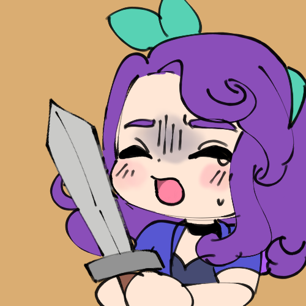
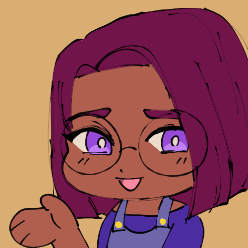
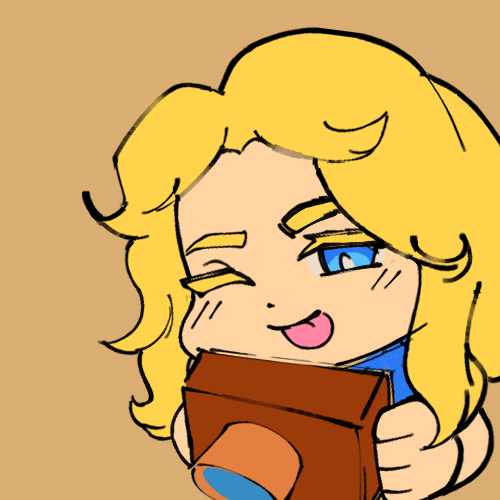
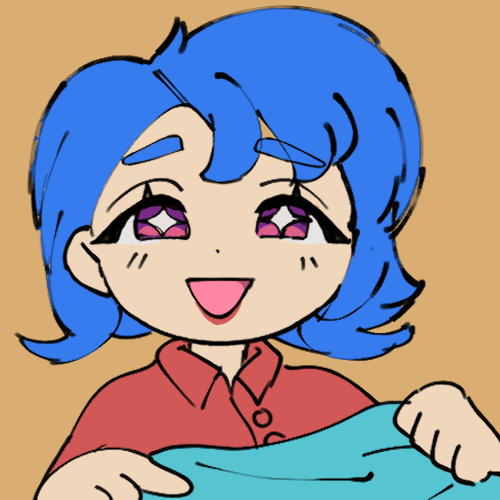
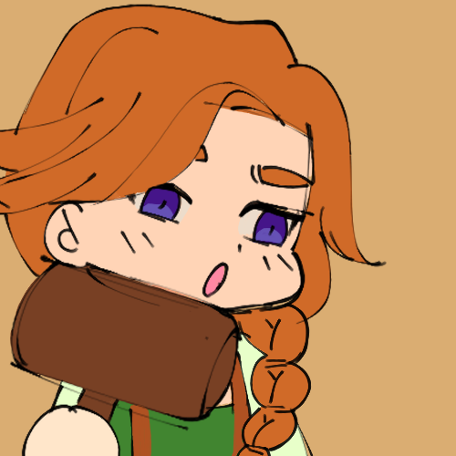
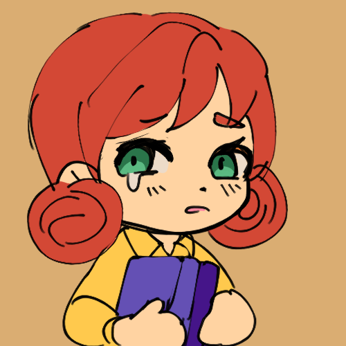

As of update 1.5, Stardew Valley currently has 6 bachelorettes. Learn about their birthday, occupation, residence, and what relations they have in the Valley. Each person has their own quirks and interests, so feel free to read up on all of them! This is just a baseline for each bachelorette, and it is highly advised to try getting to know them a bit better in the game before making a decision.
Abigail
Occupation: Self-proclaimed Adventurer
Birthday: Fall 13
Residency: Pierre's General Store, Pelican Town
Relations: Pierre (father), Caroline (mother), Sam (friend), Sebastian (friend)
Love Gifts: Amethyst, Banana Pudding, Blackberry Cobbler, Chocolate Cake, Pufferfish, Pumpkin, Spicy Eel
Hate Gifts: Clay, Holly
Description: Abigail yearns to set out on a grand quest to prove she has what it takes, though she can be quite overconfident in her abilites. Her alternative, goth aesthetic combined with her enchanting personality would make her an interesting partner for adventure.
Maru
Occupation: Nurse
Birthday: Summer 10
Residency: 24 Mountain Road, The Mountain
Relations: Demetrius (father), Robin (mother), Sebastian (half-brother)
Love Gifts: Battery Pack, Cauliflower, Cheese Cauliflower, Diamond, Gold Bar, Iridium Bar, Miner's Treat, Pepper Poppers, Radioactive Bar, Rhubarb Pie, Strawberry
Hate Gifts: Holly, Honey, Pickles, Snow Yam, Truffle
Description: A prodigy of science. Maru is a friendly and thoughtful young lady who reaches for the stars. Her passion lies in the inventions she creates in her own home. She won't hesitate to gush about her interests to those who care to listen. Don't worry, Maru will ensure every moment with her will be more exciting than the last.
Haley
Occupation: Photography Hobbyist
Birthday: Spring 14
Residency: 2 Willow Lane, Pelican Town
Relations: Emily (sister), Alex (friend)
Love Gifts: Coconut, Fruit Salad, Pink Cake, Sunflower
Hate Gifts: Clay, Prismatic Shard, Wild Horseradish
Description: With her hobby in photography, Haley has an eye for the beauty within the Valley. While coming off superficial and concieted at first, Haley is not one to descredit hard work. Perhaps she doesn't agree with getting in the mud, but she is quite enthusiastic about trying new things once she opens up her heart to it.
Emily
Occupation: Waitress
Birthday: Spring 27
Residency: 2 Willow Lane, Pelican Town
Relations: Haley (sister), Sandy (friend)
Love Gifts: Gems, Cloth, Survival Burger, Wool
Hate Gifts: Fish Taco, Holly, Maki Roll, Salmon Dinner, Sashimi
Description: Emily is a peculiar woman who never ceases to amaze the people around her. Emily works hard at the Stardrop Saloon to keep ends met, though she is never too exhausted to work on her own hobbies. She may not have romance in her mind, but does feel the cosmic connection with certain people.
Leah
Occupation: Artist
Birthday: Winter 23
Residency: Leah's Cabin, Cindersnap Forest
Relations: Elliot (friend)
Love Gifts: Goat Cheese, Poppyseed Muffin, Salad, Stir Fry, Truffle, Vegetable Medley, Wine
Hate Gifts: Bread, Hashbrowns, Pancakes, Pizza, Void Egg
Description: Wishing to escape from the mundanity of the city, this skilled artist moved to the Valley in hopes of living her life how she wants to. Leah's time is spent either working on her art or appeciating the outdoors. Though with her confidence shattered from her past, it may take a bit of convincing to let this talented artisan know her true worth.
Penny
Occupation: Teacher
Birthday: Fall 2
Residency: Trailer, Pelican Town
Relations: Pam (mother), Sam (friend), Vincent (student), Jas
(student)
Love Gifts: Diamond, Emerald, Melon, poppy, Poppyseed Muffin, Red
Plate, Roots
Platter,
Sandfish, Tom Kha Soup
Hate Gifts: Beer, Grape, Holly, Hops, Mead, Pale Ale, Piña Colada,
Rabbit's Foot,
Wine
Description: A very reserved and courteous woman who yearns to start a family one day. Her shy personality makes it hard for her to step out her comfort zone, yet she will always help out anyone who may need it. When she is not busy teaching the children of Pelican Town, Penny does the housework every day. Maybe one day she will meet someone who can sweep her off her feet and have the modest dream she wishes to share come true.